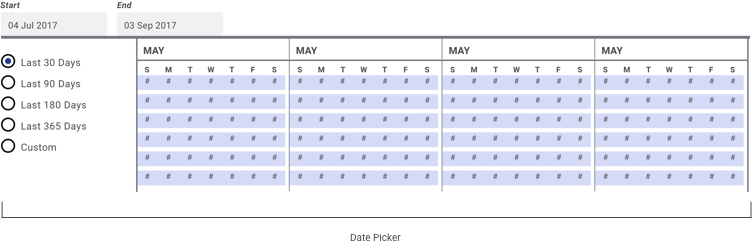
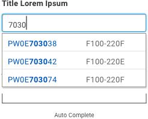
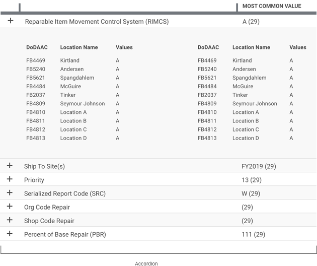
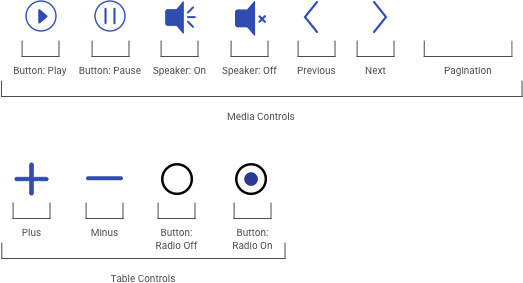
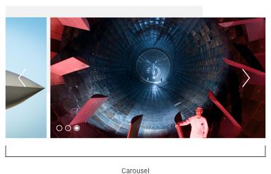

5.7 Forms & Controls
Form controls are specific to applications, though their triggers, appearance, and behaviors should follow best practices (see Buttons & Controls in section 4.11). Note that many form controls are defined by the user’s browser, and thus should be presumed to default to that design.
Engines Health Management



Positive Inventory Control



Alpha Standard
The following example component illustrates the best practices outlined previously, with the practical choices that make it so.
- Looks interactive. Controls are differentiated from “passive” content by their label, form factor, and/or use of the design system’s call-to-action color.
- Proximity. Controls are placed logically near the form or element they are intended to affect. For instance, a “SUBMIT” button lives at the bottom of the related text field.
- Predictable. Context, form label, and control label give the user a clear understanding of what will occur when they’ve interacted with the component.
Disclaimer: Please default to your application’s and USAF styles; the following component standards are to be used only if those assets are not applicable or not available

